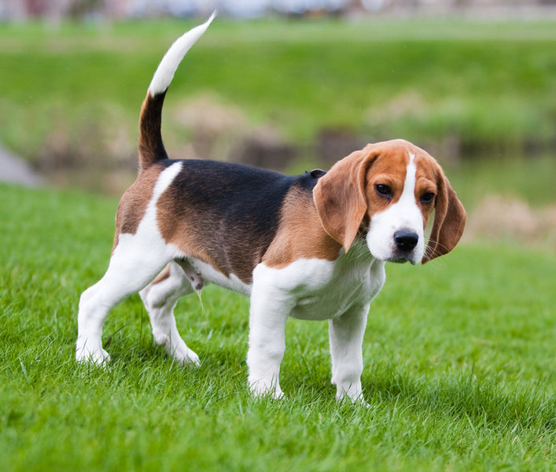
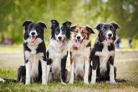

Šunų paroda
Auksiaspalvis retriveris
Auksaspalvis retriveris – šunų veislė. Kilmės šalis – Didžioji Britanija. Anksčiau buvo naudojamas medžioklėje atnešti pašautą laimikį, o dabar – namų šuo, paukštšunis, lauko varžybų dalyvis, neįgaliųjų vedlys.
 Skaitykite daugiau
Skaitykite daugiau
Australų aviganis
Australų aviganis, dažnai vadinamas Ausiu, yra vidutinio dydžio šuo, kurio veislė, nepaisant pavadinimo, buvo išvesta JAV XIX a. Veislės populiarumas kilo palaipsniui ir pasiekė piką po I-ojo Pasaulinio karo. Plačiajai visuomenei jie buvo pažįstami iš rodeo bei žirgų šou, taip pat iš Disney televizijos filmų.
Ausiai vertinami dėl savo paklusnumo, įvairiapusiškumo ir gebėjimo greitai mokytis. Be naudojimo darbui ganyklose, ši veislė taip pat pelnė pripažinimą ir kitose rolėse. Kaip ir kitos darbinės veislės, Australų aviganiai yra energingi ir judrūs, tad juos visada reikia užimti vienokia ar kitokia veikla. Jie nepakeičiami tokiose šunų sporto rūšyse kaip estafetės ir frisbis. Ausiai taip pat puikiai atlieka paieškos ir gelbėjimo šunų, šunų - gidų ir terapijos šunų funkcijas.
 Skaitykite daugiau
Skaitykite daugiau
Biglis
Biglis (angl. Beagle, pranc. beugler - bliauti, rėkti) – šunų veislė, kilusi iš Didžiosios Britanijos.
Tai medžioklinis (kraujasekys) šuo, naudotas Vakarų Europoje medžioti lapes, triušius, Sudane ir Palestinoje – šernus, Skandinavijoje – elnius, JAV – paukščius.

Skaitykite daugiau
Borderkolis
Dėl savo savybių borderkoliai gerai tinka avių bandoms ganyti. Avių bandą šios veislės šunys seka prisispaudę prie žemės, kuria kryptimi joms judėti nurodo akimis. Borderkoliai, be avių, gali ganyti ir žąsis, antis, galvijus. Šunims piemuo komanduoja su žodinėmis komandomis arba švilpuku. Tai veislė, kuri iki šiol aktyviai naudojama ganymui.

Skaitykite daugiau
Džekas raselas
Džeko Raselo terjeras – nedidelis, bet labai vikrus ir energingas šuo, puikiai tinkantis įvairiam šunų sportui. Džeko Raselo terjerai yra puikūs medžiotojų padėjėjai, pasitelkę išradingumą įspeičiantys grobį į kampą. Taip pat šios veislės šunys neretai dalyvauja „Agility“ ar „Flyball“ šunų sporte. Kartais šios veislės šunys yra kiek užsispyrę, tačiau atkaklus šeimininkas Džeko Raselo terjerą gali tikrai puikiai išdresuoti. Socializuoti šios veislės šunys puikiai sutaria su vaikais ir šunimis.
 Skaitykite daugiau
Skaitykite daugiau